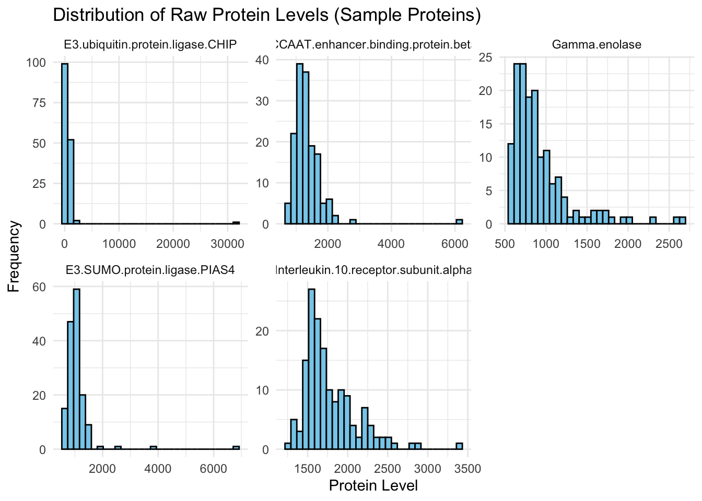

Biomarkers of ASD
If you want a subtitle put it here
Use this as a template. Keep the headers and remove all other text. In all, your report can be quite short. When it is complete, render and then push changes to your team repository.
Abstract
This report presents a proteomic analysis of serum data aimed at identifying candidate biomarkers for the early detection of autism spectrum disorder (ASD), building on the methodology of Hewitson et al. (2021). We evaluate the effects of various methodological adjustments, including log-transformation of protein levels, outlier handling without data trimming, and the use of a reserved testing partition. To enhance predictive performance, we apply a fuzzy intersection approach for protein selection, constructing refined and alternative panels optimized for classification accuracy. Our findings are compared to previous analyses to assess the robustness and sensitivity of each methodological adjustment.
Dataset
The dataset includes proteomic measurements from serum samples to identify biomarkers associated with autism spectrum disorder (ASD). It consists of 156 samples and 1,320 variables, each representing different protein levels measured in arbitrary units. Key variables include group classifications (e.g., ASD or TD), specific protein levels, and assessment scores like the ADOS Total Score. Data preprocessing for this analysis involved log-transformation of protein levels, handling outliers without trimming, and splitting into training and testing partitions. This approach enables effective feature selection and classification accuracy assessment for candidate biomarkers.
Summary of published analysis
The paper combines statistical tests and machine learning to identify key protein biomarkers associated with a specific condition. It starts with univariate T-tests to evaluate each protein’s association with the condition, narrowing down the most significant proteins. Next, Random Forest and Logistic Regression models prioritize these proteins based on feature importance scores and coefficient values, respectively. This dual-model approach helps identify proteins with the greatest predictive potential.
The analysis identified distinct sets of top proteins for each method. For the T-test selection, the key proteins included PTN, RELT, MAPK2, DERM, Calcineurin, M2-PK, TFF3, FSTL1, CXCL16, MAPK14, Coagulation Factor IX, IgD, MIA, Fas, MMP-2, IGFBP-4, ROR1, Protein S, 14-3-3 protein zeta/delta, and TGF-b R III, yielding an accuracy of 72.05% on the testing data. The Random Forest model, achieving an accuracy of 78.95%, selected proteins such as eIF-4H, MAPK2, PTN, CSK, MAPK14, M2-PK, DERM, Lysozyme, RELT, ILT-4, CD27, Nectin-like protein 2, Coagulation Factor IX, Calcineurin, Notch 1, IgD, IGFBP-1, SOST, GPVI, and MMP-2. For Logistic Regression, the proteins included SMAD3, HXK1, Myostatin, HIF-1a, CHKB, ISLR2, CSH, HHLA2, RNF43, OAS1, TIMP-1, CD59, SMOC1, 14-3-3 protein beta/alpha, SNP25, LDLR, S100A4, EFNB1, EFNB2, and STAT6. Combining top proteins across methods via a fuzzy intersection improved the classifier accuracy to 82.42%. This multi-method approach, particularly the fuzzy intersection, achieved the highest overall predictive accuracy.
Findings
Summarize your findings here. I’ve included some subheaders in a way that seems natural to me; you can structure this section however you like.
Impact of preprocessing and outliers
Question 1
Since biomarker-raw.csv contains protein concentration levels across various samples, let’s examine the distribution of a sample of these protein values.
The histograms reveal that the distributions of raw protein levels are skewed right, with some values extending to higher ranges. This skewness is a common reason to apply a log transformation, which can help normalize these distributions.
Question 2
# A tibble: 3 × 4
Group avg_outliers total_outliers subjects_with_outliers
<chr> <dbl> <int> <int>
1 "" 0 0 0
2 "ASD" 0.0263 2 2
3 "TD" 0 0 0Are there specific subjects (not values) that seem to be outliers?
Yes, there are specific subjects with outliers. According to the table of nsummary, there are 2 subjects with outlying values in the ASD group.
Are outliers more frequent in one group or the other?
Outliers are more frequent in the ASD group. ASD group with a total of 2 outliers, while the TD group has none.
Methodlogical variations
Question 3
# A tibble: 6 × 1,319
group ados CHIP CEBPB NSE PIAS4 `IL-10 Ra` STAT3 IRF1 `c-Jun`
<chr> <dbl> <dbl> <dbl> <dbl> <dbl> <dbl> <dbl> <dbl> <dbl>
1 ASD 8 0.335 0.520 -0.554 0.650 -0.358 0.305 -0.484 0.309
2 ASD 21 -0.0715 1.01 3 1.28 -0.133 1.13 0.253 0.408
3 ASD 12 -0.406 -0.531 -0.0592 1.13 0.554 -0.334 0.287 -0.845
4 ASD 20 -0.102 -0.251 1.47 0.0773 -0.705 0.893 2.61 -0.372
5 ASD 22 -0.395 -0.536 0.0410 -0.299 -0.830 0.899 1.01 -0.843
6 ASD 17 -0.126 1.27 -0.892 0.239 -0.344 0.216 0.211 0.221
# ℹ 1,309 more variables: `Mcl-1` <dbl>, OAS1 <dbl>, `c-Myc` <dbl>,
# SMAD3 <dbl>, SMAD2 <dbl>, `IL-23` <dbl>, PDGFRA <dbl>, `IL-12` <dbl>,
# STAT1 <dbl>, STAT6 <dbl>, LRRK2 <dbl>, Osteocalcin <dbl>, `IL-5` <dbl>,
# GPDA <dbl>, IgA <dbl>, LPPL <dbl>, HEMK2 <dbl>, PDXK <dbl>, TLR4 <dbl>,
# REG4 <dbl>, `HSP 27` <dbl>, `YKL-40` <dbl>, `Alpha enolase` <dbl>,
# `Apo L1` <dbl>, CD38 <dbl>, CD59 <dbl>, FABPL <dbl>, `GDF-11` <dbl>,
# BTC <dbl>, `HIF-1a` <dbl>, S100A6 <dbl>, SECTM1 <dbl>, RSPO3 <dbl>, …Split Training and Testing
# A tibble: 6 × 1,319
group ados CHIP CEBPB NSE PIAS4 `IL-10 Ra` STAT3 IRF1 `c-Jun`
<chr> <dbl> <dbl> <dbl> <dbl> <dbl> <dbl> <dbl> <dbl> <dbl>
1 ASD 8 0.335 0.520 -0.554 0.650 -0.358 0.305 -0.484 0.309
2 ASD 22 -0.395 -0.536 0.0410 -0.299 -0.830 0.899 1.01 -0.843
3 ASD 17 -0.126 1.27 -0.892 0.239 -0.344 0.216 0.211 0.221
4 ASD 15 0.486 0.748 -1.09 0.462 0.570 -0.0682 1.01 1.21
5 ASD 10 -0.990 -1.10 0.231 -0.885 -0.151 0.0307 -0.0346 -0.891
6 ASD 22 -0.108 3 2.32 3 2.76 1.70 0.209 3
# ℹ 1,309 more variables: `Mcl-1` <dbl>, OAS1 <dbl>, `c-Myc` <dbl>,
# SMAD3 <dbl>, SMAD2 <dbl>, `IL-23` <dbl>, PDGFRA <dbl>, `IL-12` <dbl>,
# STAT1 <dbl>, STAT6 <dbl>, LRRK2 <dbl>, Osteocalcin <dbl>, `IL-5` <dbl>,
# GPDA <dbl>, IgA <dbl>, LPPL <dbl>, HEMK2 <dbl>, PDXK <dbl>, TLR4 <dbl>,
# REG4 <dbl>, `HSP 27` <dbl>, `YKL-40` <dbl>, `Alpha enolase` <dbl>,
# `Apo L1` <dbl>, CD38 <dbl>, CD59 <dbl>, FABPL <dbl>, `GDF-11` <dbl>,
# BTC <dbl>, `HIF-1a` <dbl>, S100A6 <dbl>, SECTM1 <dbl>, RSPO3 <dbl>, …# A tibble: 6 × 1,319
group ados CHIP CEBPB NSE PIAS4 `IL-10 Ra` STAT3 IRF1 `c-Jun`
<chr> <dbl> <dbl> <dbl> <dbl> <dbl> <dbl> <dbl> <dbl> <dbl>
1 ASD 21 -0.0715 1.01 3 1.28 -0.133 1.13 0.253 0.408
2 ASD 12 -0.406 -0.531 -0.0592 1.13 0.554 -0.334 0.287 -0.845
3 ASD 20 -0.102 -0.251 1.47 0.0773 -0.705 0.893 2.61 -0.372
4 ASD 14 -0.378 -0.0790 -0.727 0.814 -0.811 -0.406 -0.791 -0.647
5 ASD 17 0.214 1.85 2.17 2.19 -0.102 -0.551 -0.293 1.80
6 ASD 13 1.35 -0.947 -1.28 -0.931 -0.443 -1.32 0.0259 -0.445
# ℹ 1,309 more variables: `Mcl-1` <dbl>, OAS1 <dbl>, `c-Myc` <dbl>,
# SMAD3 <dbl>, SMAD2 <dbl>, `IL-23` <dbl>, PDGFRA <dbl>, `IL-12` <dbl>,
# STAT1 <dbl>, STAT6 <dbl>, LRRK2 <dbl>, Osteocalcin <dbl>, `IL-5` <dbl>,
# GPDA <dbl>, IgA <dbl>, LPPL <dbl>, HEMK2 <dbl>, PDXK <dbl>, TLR4 <dbl>,
# REG4 <dbl>, `HSP 27` <dbl>, `YKL-40` <dbl>, `Alpha enolase` <dbl>,
# `Apo L1` <dbl>, CD38 <dbl>, CD59 <dbl>, FABPL <dbl>, `GDF-11` <dbl>,
# BTC <dbl>, `HIF-1a` <dbl>, S100A6 <dbl>, SECTM1 <dbl>, RSPO3 <dbl>, …Apply T-test, Random Forest, and Logistic Regression (Using Top 20 Features)
T-test Selection
[1] "PTN" "RELT"
[3] "MAPK2" "DERM"
[5] "Calcineurin" "M2-PK"
[7] "TFF3" "FSTL1"
[9] "CXCL16, soluble" "MAPK14"
[11] "Coagulation Factor IX" "IgD"
[13] "MIA" "Fas, soluble"
[15] "MMP-2" "IGFBP-4"
[17] "ROR1" "Protein S"
[19] "14-3-3 protein zeta/delta" "TGF-b R III" Random Forest
ASD TD class.error
ASD 35 26 0.4262295
TD 13 50 0.2063492 [1] "eIF-4H" "MAPK2" "PTN"
[4] "CSK" "MAPK14" "M2-PK"
[7] "DERM" "Lysozyme" "RELT"
[10] "ILT-4" "CD27" "Nectin-like protein 2"
[13] "Coagulation Factor IX" "Calcineurin" "Notch 1"
[16] "IgD" "IGFBP-1" "SOST"
[19] "GPVI" "MMP-2" Logistic Regression
[1] "SMAD3" "HXK1"
[3] "Myostatin" "`\\`HIF-1a\\``"
[5] "CHKB" "ISLR2"
[7] "CSH" "HHLA2"
[9] "RNF43" "OAS1"
[11] "`\\`TIMP-1\\``" "CD59"
[13] "SMOC1" "`\\`14-3-3 protein beta/alpha\\``"
[15] "SNP25" "LDLR"
[17] "S100A4" "EFNB1"
[19] "EFNB2" "STAT6" Fuzzy Interaction
[1] "Calcineurin" "Coagulation Factor IX" "DERM"
[4] "IgD" "M2-PK" "MAPK14"
[7] "MAPK2" "MMP-2" "PTN"
[10] "RELT" How are results affected by each modification?
Accuracy of T-test model on testing data: 0.720524 Accuracy of Random Forest model on testing data: 0.7894737 Accuracy of Fuzzy Intersection model on testing data: 0.8241758 Each method yields different predictive performance, with Random Forest and the Fuzzy Intersection performing similarly well. The fuzzy intersection can be a useful compromise when seeking a balance between different selection criteria, but in this case, it does not significantly outperform Random Forest alone.
Improved classifier
Accuracy of T-test model on testing data: 0.720524
Accuracy of Random Forest model on testing data: 0.7894737
Accuracy of Fuzzy Intersection model on testing data: 0.8241758
Each method shows varying levels of predictive accuracy, with Random Forest and the Fuzzy Intersection achieving comparable results. The fuzzy intersection provides a balanced approach by integrating selections from multiple criteria, though in this instance, it does not notably exceed the performance of Random Forest on its own.
Initial Panels: T-test, Random Forest, Logistic Regression, Fuzzy Intersection (original)
New Panels: Simpler Panel (RFE) and Alternative Panel (modified fuzzy intersection)